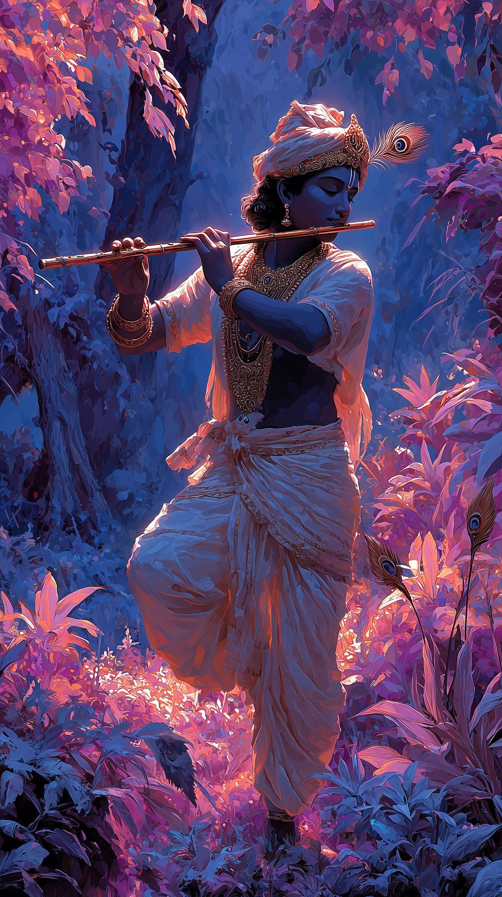

"Lord Krishna, the eighth avatar of Vishnu, represents the ultimate embodiment of love, wisdom, and divine playfulness. From the mischievous 'Makhan Chor' of Gokul to the profound philosopher of the Bhagavad Gita, his life serves as a guide for humanity. His iconic flute music is said to draw all souls toward the divine, transcending the material world. These images capture his diverse forms—reminding us that divinity exists in both the simple joys of childhood and the deep complexities of duty."